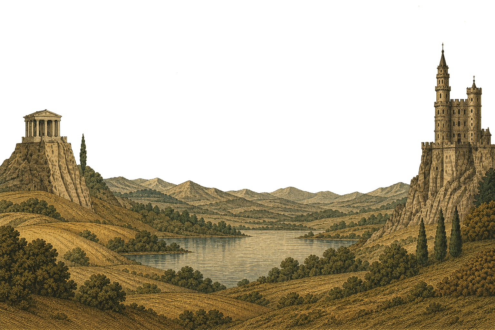
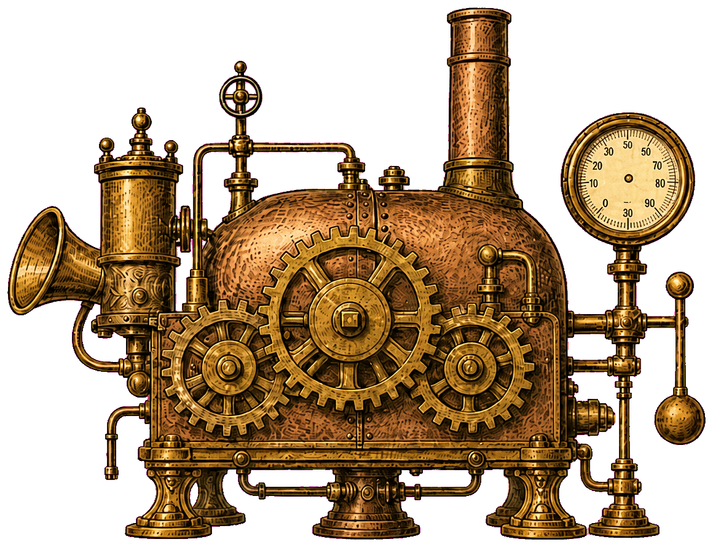
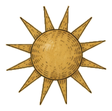
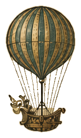
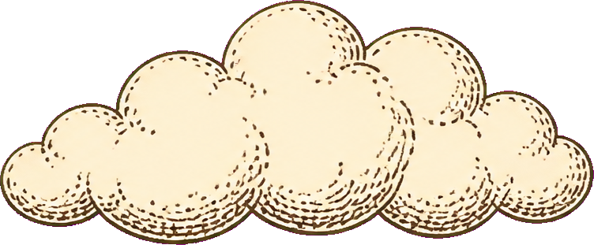
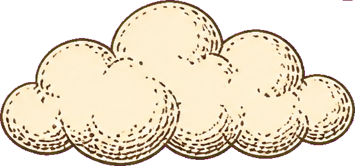
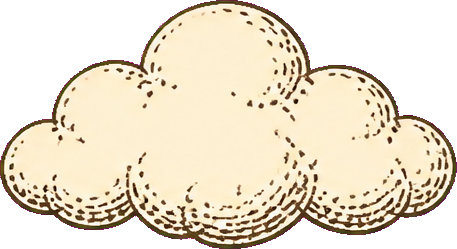
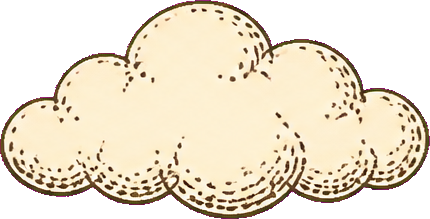
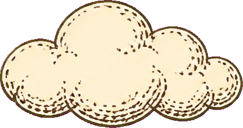
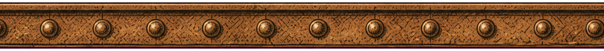

Regenerated landscape, machine, base bar, and clouds. Sun kept. Balloon rigging punched through. Cog overlays kept; drawn cog crops and chimney steam removed.

01-landscape.png full-canvas landscape, no machine

02-machine.png machine on transparent00-sky.png parchment sky

03-sun.png sun (unchanged)

04-balloon.png balloon, strings punched

05-cloud-01.png filled cloud

05-cloud-02.png filled cloud

05-cloud-03.png filled cloud

05-cloud-04.png filled cloud

05-cloud-05.png filled cloud

06-base-bar.png riveted base barcog-overlay-a.png cog overlay (unchanged)